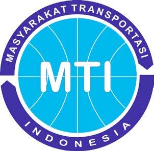
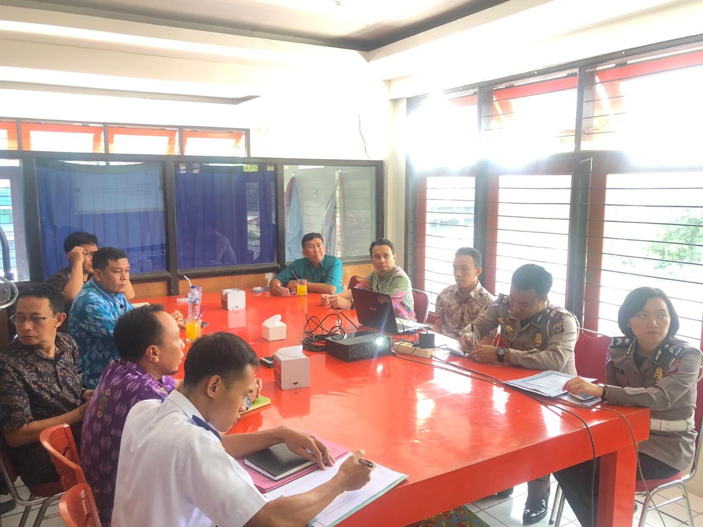
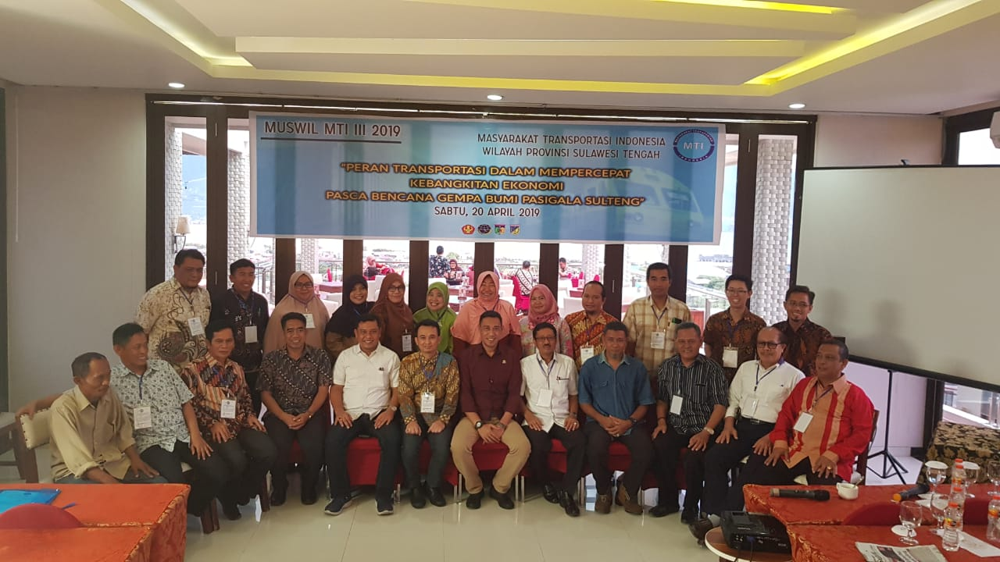
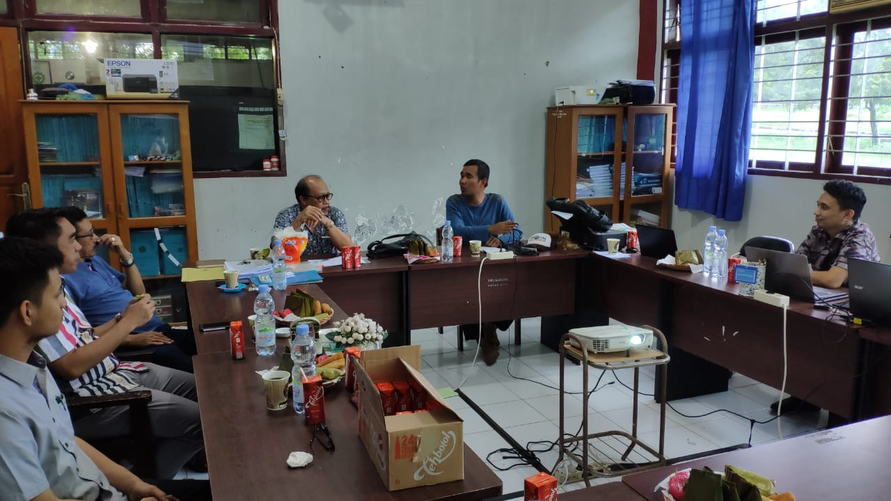
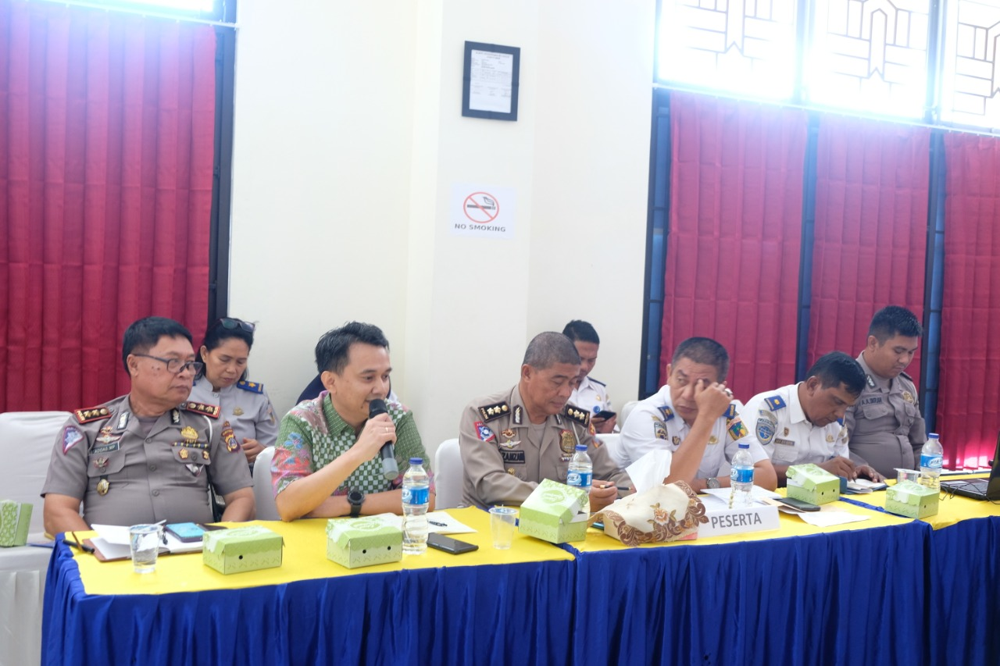

Tentang Masyarakat Transportasi Indonesia
Didirikan di Jakarta pada tanggal 12 Desember 1995, merupakan organisasi profesi yang menghimpun para pakar, akademisi, praktisi dan birokrat yang terdorong oleh kesadaran tanggung jawab sosialnya sebagai anggota masyarakat, berkehendak dan bertekad untuk mendukung dan menempatkan diri sepenuhnya dalam pembangunan transportasi nasional yang berkelanjutan.
Tujuan
- Menumbuhkembangkan tenaga profesi di bidang transportasi
- Meningkatkan penguasaan, pengembangan dan pemanfaatan ilmu pengetahuan dan teknologi di bidang transportasi
- Berperan aktif dalam meningkatkan kualitas penyelenggaraan pelayanan transportasi yang berkesinambungan
- Menjadi mediator berbagai pemangku kepentingan ( stakeholders ) di bidang transportasi
Struktur Organisasi
Program Kerja
Fasilitasi dialog dan mediasi komunikasi antar stakeholders
Pengembangan jejaring organisasi yang berlingkup nasional dan internasional
Pengembangan jejaring organisasi yang berlingkup nasional dan internasional
Advokasi dan pendampingan stakeholders
Pembentukan tim penyusun rekomendasi MTI bagi kebijakan publik di bidang transportasi
Foto Kegiatan MTI Sulteng

Pembahasan dengan Dishub

Musyawarah Wilayah

Rapat Koordinasi

Laporan Kerusakan Jalan
Contact
Location:
Ruko Pesona Nokilalaki Blok B No 3
Jalan Soekarno-Hatta Palu, Sulawesi Tengah
Email:
MTI Sulteng
mti.sulteng@gmail.com
Call:
Yoyon Oktapian
+62 822-9271-2202